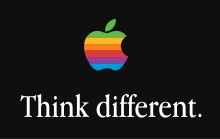

Jurnal de lectură și notițe de curs
Lecturi Esențiale
Titlu: Micul Prinț
Autor: Antoine de Saint-Exupéry
Rezumat:
Această poveste începe cu un pilot care se prăbușește în deșertul Sahara și întâlnește un băiat neobișnuit, Micul Prinț. Pe măsură ce își împărtășesc poveștile, aflăm despre călătoriile prințului pe alte planete, fiecare reprezentând o alegorie pentru aspecte ale vieții: ambiție, izolare, dragoste sau superficialitate. În centrul poveștii stă prietenia lui cu o vulpe, care îi explică importanța legăturilor personale și faptul că "esențialul este invizibil pentru ochi."
Opinia mea:
Am fost impresionat de modul în care această carte aparent simplă reușește să transmită lecții profunde despre viață. Micul Prinț ne arată cât de important este să ne păstrăm inocența și să ne concentrăm pe ceea ce contează cu adevărat, cum ar fi prietenia și iubirea. Stilul poetic și desenul autorului fac povestea și mai captivantă.
Notițe de Curs
Materia: Jurnalism Digital
Subiect: Cum să scrii un titlu atractiv pentru știrile online.
Produse școlare
Recenzia unui articol științific
Titlu: Efectele inteligenței artificiale asupra pieței muncii
Sursa: Revista Economică Globală
Rezumat: În acest proiect, am analizat un articol academic care explorează impactul automatizării și inteligenței artificiale asupra diverselor industrii. Am evaluat datele statistice prezentate și am propus soluții alternative la provocările identificate.
Concluzii: Am concluzionat că, deși AI promite creșterea eficienței, poate genera și inegalități semnificative pe piața muncii. Este esențială implementarea de politici publice care să sprijine recalificarea forței de muncă.
Analiza unui videoclip de promovare
Titlu: Campania 'Think Different' de la Apple
Sursa: Videoclip publicitar Apple
Rezumat: Am realizat o analiză detaliată a videoclipului de promovare 'Think Different', evaluând mesajele subtile și impactul emoțional asupra publicului.
Concluzii: Videoclipul reușește să inspire și să creeze o conexiune profundă cu spectatorii, dar am remarcat și riscul supraidealizării. Aceasta este o lecție valoroasă despre puterea storytelling-ului în publicitate.
Imagine reprezentativă:

Raport asupra unei campanii de conștientizare
Titlu: Campania 'Save the Planet' de la Greenpeace
Sursa: Platformele social media Greenpeace
Rezumat: Acest raport prezintă impactul campaniei 'Save the Planet', concentrându-se pe strategiile folosite pentru a atrage atenția asupra crizei climatice. Am analizat mesajele transmise prin social media și efectul lor asupra publicului tânăr.
Concluzii: Campania a fost un succes datorită imaginilor puternice și implicării directe a utilizatorilor. Cu toate acestea, am subliniat nevoia de acțiuni mai concrete pentru a susține mesajele promovate.
Studiu comparativ asupra reclamelor
Titlu: Reclamele Coca-Cola: Efectul sărbătorilor față de promovarea sustenabilității
Sursa: Campanii TV și online Coca-Cola
Rezumat: Am comparat două campanii Coca-Cola: una centrată pe atmosfera de sărbători și alta pe inițiativele de mediu. Studiul a inclus analiza limbajului vizual și impactul asupra publicului țintă.
Concluzii: Campania de sărbători continuă să fie mai eficientă în crearea unei conexiuni emoționale, dar promovarea sustenabilității devine din ce în ce mai relevantă pentru generațiile tinere.
Recenzii
Recenzie film
Titlu: Interstellar
Regizor: Christopher Nolan
Rezumat:
Filmul prezintă o viitoare lume în care Pământul nu mai poate susține viața umană. Cooper, un fost pilot, devine liderul unei echipe de astronauți care călătoresc printr-o gaură de vierme pentru a găsi o nouă casă pentru umanitate. Pe măsură ce călătoria avansează, timpul devine o temă centrală, iar Cooper se luptă cu dorul de familie și cu sacrificiile personale.
Opinia mea:
Interstellar este un film care m-a impresionat profund prin complexitatea sa emoțională și științifică. Relația dintre Cooper și fiica sa este inima poveștii, iar modul în care regizorul explorează noțiuni precum relativitatea timpului m-a făcut să reflectez la cât de prețioasă este fiecare clipă. Vizualurile impresionante și coloana sonoră intensă fac din acest film o experiență de neuitat.
Recenzie carte
Titlu: Harry Potter și Piatra Filozofală
Autor: J.K. Rowling
Rezumat:
Prima carte din seria Harry Potter urmărește povestea unui băiat orfan care află că este un vrăjitor și că a fost acceptat la Școala Hogwarts de Magie. În timp ce își face prieteni și descoperă secretele școlii, Harry trebuie să înfrunte pericolul reprezentat de Lordul Voldemort, vrăjitorul care i-a ucis părinții.
Opinia mea:
Această carte m-a captivat de la primele pagini. Lumea magică descrisă de J.K. Rowling este fascinantă, iar personajele sunt bine conturate. Povestea lui Harry este o combinație perfectă de aventură, prietenie și curaj, ceea ce face lectura nu doar distractivă, ci și inspirațională.